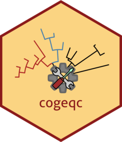

Calculate homogeneity scores for orthogroups
Source:R/homology_detection.R
calculate_H.RdCalculate homogeneity scores for orthogroups
Usage
calculate_H(
orthogroup_df,
correct_overclustering = TRUE,
max_size = 200,
update_score = TRUE
)Arguments
- orthogroup_df
Data frame with orthogroups and their associated genes and annotation. The columns Gene, Orthogroup, and Annotation are mandatory, and they must represent Gene ID, Orthogroup ID, and Annotation ID (e.g., Interpro/PFAM), respectively.
- correct_overclustering
Logical indicating whether to correct for overclustering in orthogroups. Default: TRUE.
- max_size
Numeric indicating the maximum orthogroup size to consider. If orthogroups are too large, calculating Sorensen-Dice indices for all pairwise combinations could take a long time, so setting a limit prevents that. Default: 200.
- update_score
Logical indicating whether to replace scores with corrected scores or not. If FALSE, the dispersal term and corrected scores are returned as separate variables in the output data frame.
Value
A 2-column data frame with the variables Orthogroup and Score, corresponding to orthogroup ID and orthogroup score, respectively. If update_score = FALSE, additional columns named Dispersal and Score_c are added, which correspond to the dispersal term and corrected scores, respectively.
Details
Homogeneity is calculated based on pairwise Sorensen-Dice similarity indices between gene pairs in an orthogroup, and they range from 0 to 1. Thus, if all genes in an orthogroup share the same domain, the orthogroup will have a homogeneity score of 1. On the other hand, if genes in an orthogroup do not have any domain in common, the orthogroup will have a homogeneity score of 0. The percentage of orthogroups with size greater than max_size will be subtracted from the homogeneity scores, since too large orthogroups typically have very low scores. Additionally, users can correct for overclustering by penalizing protein domains that appear in multiple orthogroups (default).